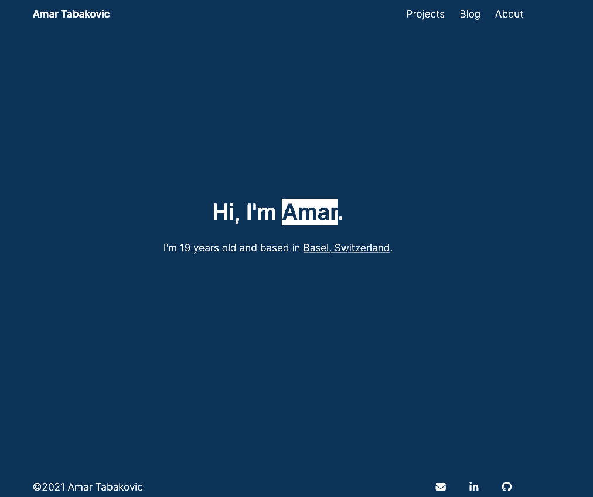

Dark mode in Hugo with SCSS
My implementation of a dark mode in Hugo.
• Web • 3 min
Not too long ago, I developed my personal website using the static site generator Hugo. While coming up with designs for this website, I was plagued with the choice of implementing it in either a light theme or a dark theme. I liked both variants, so I was very indecisive until I came up with an idea:
To implement both variants using a light/dark mode toggler.
And so I did using HTML, SCSS and plain JavaScript.
SCSS
In the _variables.scss file, all Sass variables, including the colors, are defined. In this example I will use the colors black and white.
_variables.scss:
/* --- COLORS --- */
$white: #ffffff;
$black: #000000;
/* --- COLOR STYLING --- */
// Light theme coloring
$bg-color-primary-light: $white;
$font-color-primary-light: $black;
// Dark theme coloring
$bg-color-primary-dark: $black;
$font-color-primary-dark: $white;
For this example, I will set the base colors in _base.html in the body element. You can of course add more classes to your liking.
_example.scss:
body {
background-color: $bg-color-primary-light;
color: $font-color-primary-light;
}
In the _dark.scss file, I’ve defined the rules for the dark theme.
_dark.scss:
.dark-theme {
background-color: $bg-color-primary-dark;
color: $font-solor-primary-dark;
}
HTML
After having defined the styling with SCSS, it was time to implement the toggle in HTML and JS. From here on, some parts of the implementation are taken from this great article by Radu Matei.
For this example, I will implement the toggle in the index page, just like I did with this website. However, the same can be done in e.g. header.html. The toggle will be a span element.
index.html:
<span id="dark-mode-toggle">Click me!</span>
JavaScript
The main.js file is included in the baseof.html partial. The function setTheme takes “dark” or “light” as a parameter and adds/removes the CSS class dark-theme from the body element, depending on what was given as the parameter.
Additionally, the parameter value is saved in local storage, so that the selected theme persists across different pages. If there is no value found in local storage, an empty string will be used.
main.js:
function setTheme(mode) {
localStorage.setItem("dark-mode-storage", mode);
if(mode == "dark") {
document.body.classList += " dark-theme";
}
else if(mode == "light") {
document.body.classList -= " dark-theme";
}
}
var savedTheme = localStorage.getItem("dark-mode-storage") || "";
setTheme(savedTheme);
The toggleDarkTheme.js file gets included in index.html. This file is responsible for catching the event from clicking on the toggle. The function setTheme gets called with “light” or “dark” as the parameter, depending on whether the body element has the class dark-theme.
toggleDarkTheme.js:
var toggle = document.getElementById("dark-mode-toggle");
toggle.addEventListener("click", () => {
if (document.body.classList.contains('dark-theme')) {
setTheme("light");
} else {
setTheme("dark");
}
});
Outcome
Despite there being room for improvement with this approach, especially with handling the CSS classes, I am pretty satisfied with the result. It’s a neat little feature to have. Overall, there is still plenty of restructuring and improving I’ve got left to do for this site, but it’s coming along nicely.
Here’s how it looks on my page:
